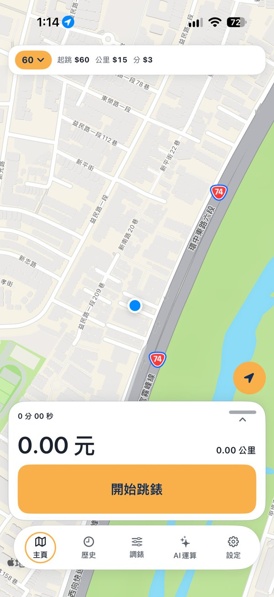
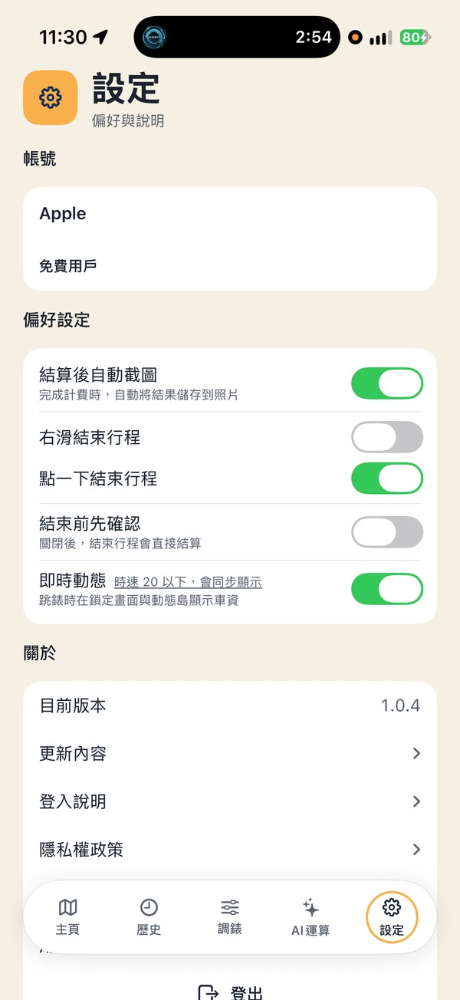

App Screens


AMeter (捷錶)
- Effective date: November 18, 2026
- Version: v1.0
- Applies to: AMeter (iOS, Bundle ID: tw.brown.fare)
Contents
1. Service Description
- These Terms of Service (the "Terms") are an agreement between you and Brown ("we," "us") concerning your use of the iOS app 捷錶 (AMeter; Bundle ID: tw.brown.fare; the "App") and related services (together, the "Service"). The operator is Brown.
- Please read these Terms and the AMeter Privacy Policy before using the Service. The full Terms are always available in the App under "Settings › About › Terms of Service." You may review them before downloading, signing in, or purchasing a paid plan.
- By tapping "Agree" or starting to use the Service, you confirm that you have read, understood, and agreed to these Terms. If you do not agree, please do not use the Service.
- The App is a driver-use fare estimation and trip record tool for your own bookkeeping, checking, and review of trips.
- The App is not a weights-and-measures-certified taxi meter and cannot replace the certified meter in the vehicle. It is not a diversified-taxi fare system approved by the competent transport authority, and it does not provide ride-hailing, dispatch, or passenger-transport services.
- Estimated amounts and trip-record images in the App are not receipts, invoices, or proof of carriage.
- The actual fare is determined by the certified meter in the vehicle and the fare officially published by the competent authority.
- The App's built-in default rate (NT$50 flag drop, NT$3 per minute, NT$15 per kilometre) is only a product default. It is not any city or county government's official taxi fare. Official fares may differ by locality and may change at any time.
- Trip records are stored on your device. Route tracks are kept for 30 days by default and then deleted automatically; you may change this in "Settings > Data Retention" to not keep tracks, or to 7, 30, or 90 days. Trip summaries are kept until you delete them. We do not hold a copy of your trip records. Data may be unrecoverable if the device is lost, damaged, reset, or if the App is uninstalled.
- The features of the Service, and what is free or paid, are as actually provided in the App at the time.
2. Accounts and Sign-In
- You may create an account with Sign in with Apple or Google sign-in. Sign-in is optional. Without an account, features that require sign-in are unavailable.
- You must keep your sign-in credentials and device secure and must not let others use your account. If you discover unauthorised use, please notify us immediately.
- Data provided through a sign-in platform is handled under the AMeter Privacy Policy. Those platforms provide their services under their own terms, which we cannot control. We never receive your Apple or Google password.
- You may delete your account at any time in the App under "Settings › Account › Delete Account." See Chapter 8. Deleting your account does not automatically cancel a paid plan subscribed through Apple.
- We may suspend or terminate your account if you breach these Terms.
3. Your Responsibilities
- You must comply with the Highway Act, the Regulations for Automobile Transportation Operators, and official taxi fares, and you must charge passengers using the certified meter in the vehicle.
- You must not replace the certified meter with this App, and you must not charge passengers based on the estimated amount shown in the App.
- You must not treat the App's screens or trip-record images as a receipt, invoice, or proof of carriage, or give or show them to passengers or anyone else. Trip-record images permanently display wording such as "Estimate record · Not a receipt." You must not remove, cover, or alter that wording before using the image outwardly.
- You must respect passenger privacy. Trip records and trip-record images include pick-up and drop-off locations and times, which may be a passenger's personal data. You may use them only as needed for your own trip records, bookkeeping, and resolving a fare dispute for that trip; you must not publish them or send them to anyone unrelated to that trip; and you must comply with the Personal Data Protection Act as a collector in your own right.
- You must not operate the App handheld while driving; please make settings or review information only after you have parked safely, in accordance with road traffic safety rules.
- You must not use the Service in any of the following ways:
- Violating the law or infringing others' rights.
- Reverse-engineering, cracking, interfering with servers, or accessing the Service in bulk by automated means.
- Uploading files that contain malware, or images or content you are not entitled to use.
- Impersonating another person or using another person's account.
- Custom rates are for your own estimates and records only. When charging passengers, use the certified meter in the vehicle and the official local fare. You set custom rates yourself and must confirm that they comply with local rules.
4. Fare Estimates and Disclaimers
- The App calculates estimated amounts from the phone's location data and the rate you select. Location may be affected by signal blockage (for example tunnels, underpasses, elevated roads, or high-rise areas), device performance, battery, system settings, and background-execution limits. The estimate may differ from the actual distance, time, or metered fare.
- If the location signal is interrupted, the App may fill gaps by estimation. Those estimates are for reference only.
- When a trip is settled, any amount under NT$10 is dropped unconditionally (for example, NT$263 settles to NT$260).
- The App is a driver-use fare estimation and trip record tool. It is not a certified taxi meter and cannot replace the certified meter in the vehicle.
- Amounts shown on screen and in images are estimates based on the rate you selected or set yourself, and are only for your personal bookkeeping and checking.
- Estimated amounts and trip-record images are not receipts, invoices, or proof of carriage. They must not be used as a basis for charging passengers, or as the sole basis for a fare dispute.
- The actual fare is determined by the certified meter in the vehicle and the fare officially published by the competent authority.
- If you breach these Terms by replacing the certified meter with the App, charging passengers based on an estimated amount or a custom rate, or using a trip-record image as a receipt or proof of carriage, you are solely responsible for any dispute, fine, or loss that results. This does not apply to loss caused by our wilful misconduct or gross negligence.
- Default rates, explanations, and prompts in the App are not legal advice and do not represent the views of any competent authority. If you have questions about local rules, please consult the competent authority or a professional.
5. AI Screenshot Fare Estimates
- "AI screenshot fare estimate" is a feature in which you upload a map screenshot and a third-party AI service recognises the route, distance, and time, after which an amount is estimated.
- Results of an AI screenshot fare estimate are for reference only. They are produced from the screenshot you upload and the third-party AI service's recognition, and may be wrong or incomplete. Please check the screenshot and the result yourself.
- The source of the screenshot (for example a maps app or website) may have its own terms of use. You must confirm that your upload and use comply with those terms.
- The Service uses third-party services including Apple, Google (including Firebase), and a third-party AI provider. When you use related features, you must also comply with each third party's terms. Interruptions, changes, or errors in third-party services are outside our control.
6. Fees and Subscriptions
- The Service currently provides free features. If paid features are introduced in the future, prices and terms will be announced separately, and will be as shown on the in-app purchase page and the App Store at that time.
- If a paid plan is offered, it will be purchased and collected through in-app purchase on the Apple App Store, and Apple's Media Services Terms will apply. We will not receive your full credit-card number.
- Subscriptions automatically renew under Apple's rules unless you cancel before the deadline set by Apple. You may manage or cancel a subscription on the iPhone subscriptions page or the Apple subscriptions page. After you cancel, paid features remain available until the end of the current period.
- Refunds are handled by Apple under its policies. You may apply to Apple at the Apple refund request page. We cannot issue a refund to you directly.
- If a paid plan is offered, it will only add features such as additional rate presets, records, statistics, and export. It does not include any "charging mode" and does not change the App's nature as an estimation and record tool.
Free Version and Service Changes
- The free version is provided as is; its features, usage limits, or scope may be changed, suspended, or discontinued.
- If paid plans are introduced, some features currently in the free version may become paid features, and the scope of the free version may be reduced.
- We reserve the right to modify the Service at any time. For material changes, we will provide at least 30 days' notice through in-app notification or announcement; paid benefits already purchased will remain unaffected for the paid period.
- Continued use after a change takes effect means you accept it; if you do not agree, you may stop using the Service and delete your account at any time.
7. Intellectual Property
- Copyright, trademarks, and other intellectual-property rights in the App's software, interface design, icons, text, and other content belong to us or to our licensors.
- We grant you a non-exclusive, non-transferable, non-sublicensable right to use the App on Apple-branded devices that you own or control, in accordance with these Terms and the Usage Rules in Apple's Media Services Terms.
- You must not copy, modify, distribute, rent, reverse-engineer, or otherwise exploit the App, except as otherwise permitted by law.
- Rights in screenshots you upload and data you create remain yours or the original rightsholder's. You authorise us to process that content to the extent necessary to provide the Service (for example, sending it to an AI service for an estimate). You must confirm that you have the right to upload that content.
8. Account Deletion
- You may delete your account at any time in the App under "Settings › Account › Delete Account." You do not need to write to or contact customer support.
- The deletion flow will explain what will and will not be deleted, and may ask you to sign in again to verify your identity. A confirmation will be shown when deletion is complete.
- Deleting your account does not automatically cancel a paid plan subscribed through Apple. Renewal charges will still be collected by Apple. Please cancel first on the iPhone subscriptions page or the Apple subscriptions page.
- After you delete your account, account data and cloud settings are handled as described in the AMeter Privacy Policy. Trip records on the device are handled according to the choice you make in the deletion flow.
- If you can no longer sign in to the App, you may request deletion by writing to qaz50805@icloud.com.
9. Limitation of Liability
- To the extent permitted by law, we are not liable for the following losses, except where they are caused by our wilful misconduct or gross negligence:
- Disputes, fines, or losses arising from your breach of these Terms.
- Losses arising from location or AI-recognition error where you did not treat the certified meter as controlling, as required by these Terms.
- Losses arising from interruption, change, or error in a third-party service.
- Loss of data arising from your device, network, system settings, or your own deletion of data.
- Except as provided above, our liability for loss caused by slight negligence is limited to the extent permitted by law.
- Mandatory provisions of law prevail. This chapter does not exclude rights you have under the Consumer Protection Act or other laws that cannot be waived by contract.
- If any of the following applies, we may suspend or terminate your account after notice, or, in serious or urgent cases, suspend it first without notice: you breach a prohibition in these Terms; you use the App for an unlawful act and we are notified by a competent or judicial authority; or you impersonate another person or use another person's account. If you object to a suspension or termination, you may write to qaz50805@icloud.com, and we will reply within a reasonable time.
10. Changes, Governing Law, and Contact
- We may revise these Terms. After a revision, we will announce it in the App and on this page, and we will update the version and date.
- For a revision that materially affects your rights (for example, charging methods, the scope of liability, or use restrictions), we will give you at least 30 days' clear notice, such as an in-app notification, before it takes effect.
- If you continue to use the Service after a revision takes effect, you are deemed to agree to the revised Terms. If you do not agree, you may stop using the Service and delete your account. Any paid subscription will be handled under Chapter 6.
- These Terms are governed by the laws of the Republic of China (Taiwan).
- If a dispute arises out of these Terms or the Service, the parties shall first attempt to resolve it in good faith.
- If any provision of these Terms is held invalid by a court, the remaining provisions remain in effect. Our failure or delay in exercising a right under these Terms is not a waiver of that right.
- The Traditional Chinese version of these Terms prevails. The English version is for reference only.
Apple-Related Terms
- These Terms are between you and us, not Apple Inc. We, not Apple, are responsible for the App and its content.
- Apple has no obligation to provide any maintenance or support services for the App.
- If the App fails to conform to any applicable warranty, you may notify Apple, and Apple will refund the purchase price of the App to you. To the maximum extent permitted by law, Apple has no other warranty obligation with respect to the App.
- We, not Apple, are responsible for addressing claims relating to the App concerning product liability, failure to conform to legal requirements, or consumer protection, and for investigating, defending, settling, and discharging any third-party claim that the App infringes that party's intellectual property.
- You represent and warrant that you are not located in a country that is subject to a U.S. Government embargo, or that has been designated by the U.S. Government as a "terrorist supporting" country, and that you are not listed on any U.S. Government list of prohibited or restricted parties.
- Apple and its subsidiaries are third-party beneficiaries of these Terms. Upon your acceptance of these Terms, Apple will have the right (and will be deemed to have accepted the right) to enforce these Terms against you as a third-party beneficiary.
Contact Us
- Operator: Brown
- Support email: qaz50805@icloud.com
- Response time: within 7 business days
- Account deletion information: see Chapter 8.
© 2026 Brown